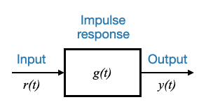
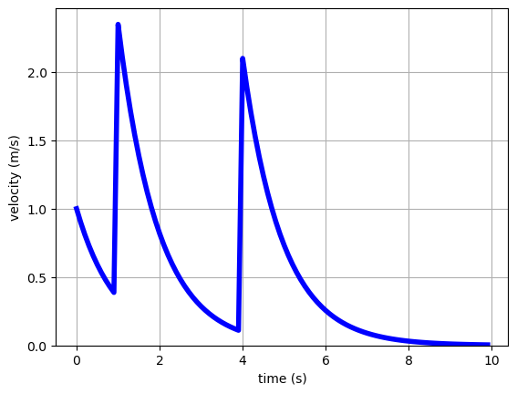
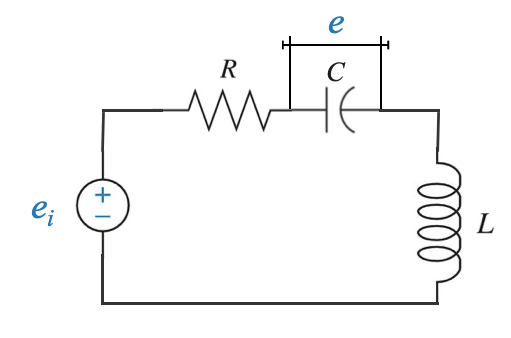
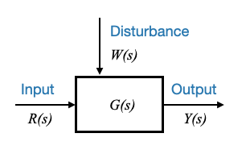

import numpy as np
import matplotlib.pyplot as plt
# Define the time range
t = np.linspace(-2, 4, 600)
# Define a function for the rectangular pulse
def rectangular_pulse(t):
if 0 <= t <= 2:
return 1
else:
return 0
# Vectorize the function to allow numpy array inputs
vectorized_pulse = np.vectorize(rectangular_pulse)
# Get the pulse values
pulse_values = vectorized_pulse(t)
plt.figure(figsize=(10, 4))
plt.plot(t, pulse_values, 'b', linewidth=2)
plt.title("Rectangular Pulse")
plt.xlabel("Time")
plt.ylabel("Amplitude")
plt.xlim([-2, 4])
plt.ylim([-0.2, 1.2])
plt.grid(True)
plt.show()Modeling in Control Systems
When we discuss control systems, the importance of modeling cannot be overstated. Models are mathematical representations of systems and play a pivotal role in the analysis and design of control systems. While many of you might be familiar with some of the models from previous studies, it’s always a good idea to review and set the terminologies and symbols we’ll be using throughout the course.
Popup Question: Why is modeling important in control systems?
Answer: Modeling provides a mathematical representation of systems which aids in their analysis, design, and understanding.
State Variable Model
In our last discussion, we introduced the concept of the state variable model. This model revolves around the idea that the energy state of a system can be defined using state variables.
Consider a system with state variables \(x_1, x_2, ... x_n\).
The relationship between these variables and the system’s differential equations can be represented as:
\[ \begin{aligned} \dot{x_1} &= a_{11}x_1 + a_{12}x_2 + ... + a_{1n}x_n + b_1r\\ \dot{x_2} &= a_{21}x_1 + a_{22}x_2 + ... + a_{2n}x_n + b_2r\\ \vdots\\ \dot{x_n} &= a_{n1}x_1 + a_{n2}x_2 + ... + a_{nn}x_n + b_nr\\ \end{aligned} \]
Where \(r\) is the input variable and the coefficients form the matrices \(A\) and \(B\).
Additionally, the output equation is:
\[ y = c_{1}x_1 + c_{2}x_2 + ... + c_{n}x_n + dr \]
The output is an attribute of the system and is obtained as an algebric combination of the state variables.
The model is comprised of \(n\) state equations and one output equation for a Single Input Single Output (SISO) system.
This is a \(n-th\) order system. The order of the system is directly linked to the number of state variables.
In matrix notation, this system can be represented as:
\[ \dot{x} = Ax+br \]
and the output equation:
\[ y=cx+dr \]
Where: - \(A\) is a \(n \times n\) matrix - \(b\) is a \(n \times 1\) vector - \(c\) is a \(1 \times n\) vector - \(d\) is a scalar constant.
Note: in the state-variable representation, the input is denoted by \(u\) or \(r\).
Popup Question: What does the order of a system represent? Answer: The order of a system is directly linked to the number of state variables which represent the energy state of the system.
Impulse Response Model
Another fundamental model in control systems is the impulse response model, which is particularly useful for linear time-invariant systems.
For this model, there are two conditions to consider:
Relaxed System: A system is termed ‘relaxed’ if its initial energy storage is zero. Mathematically, this means the initial conditions or system state at \(t=0\) are zero: \(\underline{x}(t=0)=0\)
Input-Output Relationship: The impulse response model gives the relationship between the input and output of a system. However, it doesn’t provide information about the system state.
 |
Left: state variable model of a single input single output system; Right: impulse response model of a single input single output system
The impulse response model does not rely on state variables, however it is still extremly important and useful in control systems.
The relationship between the input \(r(t)\) and the output \(y(t)\) of any linear time-invariant system that is initially relaxed at \(t = 0\), can be described, for \(t\ge0\), by an equation of the form :
\[ y(t)=\int_0^t g(t−\tau)r(\tau)d\tau=\int_0^t g(t)r(\tau−\tau)d\tau; \;\;t\ge0 \]
Where:
- \(g(t)\) is the impulse response of the system.
- \(r(t)\) is the input to the system, for \(t\ge0\)
This is called convolution integral.
What is a state variable model: A state variable model describes the system’s state \(x(t)\) over time, based on input and initial conditions.
The convolution integral provides the value of the output \(y(t)\) for all time, given the input, under the assumption that initial conditions are zero.
We can then say that the impulse response \(g(t)\) characterises a relaxed system completely.
Popup Question: What information does the impulse response model provide about a system? Answer: The impulse response model provides the relationship between the input and the output of a system but does not give information about the system state.
We can then represent the relationship between the input and the output as:
|
 |
Understanding the convolution integral
To understand the convolution integral, remember that we are focusing on Linear Time-Invariant (LTI) Systems
Linear: This means the system follows the principle of superposition. If you input a signal into the system, the output is directly proportional to that input. If you double the input, the output doubles too. This also means if you have two different inputs, the system’s response to the combined input is just the sum of its responses to each input separately.
Time-Invariant: This means the system behaves the same way no matter when you input the signal. If you input a signal today or tomorrow, the output will be the same, provided the input signal is the same.
Impulse Response
The impulse response of an LTI system is its output when the input is an impulse signal (a very short, “instantaneous” burst of energy at time zero). This response characterizes the system completely. Think of it as the system’s “fingerprint.” It uniquely describes how the system responds to any input over time.
The impulse response is the output of a system when an input that is an impulse function is applied to it. An impulse function is a theoretical input signal that is very short in duration and has a very large magnitude, but its area under the curve (integral) is equal to 1.
For example:
|
|
If we have another impulse we can expect the same response at this second time, and if we hit twice as hard, then the response is twice as large (superposition principle).
|
 |
This means that the complete response of the system is the summation of the individual signals.
If we have a more complex signal (e.g. ramp) we can break it down to a sequence of impulses (the output is the response to each of the impulses).
In reality, the impulses and responses will be infinitesimal, and the summation in the time domain is a convolution , where is the impulse response of the system
Convolution Integral
Now, onto the convolution integral. Since an LTI system is linear and time-invariant, you can construct any signal by adding up scaled and shifted versions of the impulse signal. The impulse response tells us how the system reacts to these impulses.
The convolution integral is a mathematical tool that takes one function (your input signal) and “slides” another function (the system’s impulse response) across it. As it slides, it multiplies the overlapping values of the two functions at each point in time, integrates (adds up) these products, and outputs the result. This process effectively combines the effects of the system’s response to all the tiny “impulses” that make up your input signal, giving you the total output of the system for that input.
Simple Analogy
Imagine you’re pushing a child on a swing (the system) with a series of pushes (the input signal). Each push affects the swing’s motion (the output signal). The way the swing responds to a single push is like the impulse response. If you know exactly how the swing responds to one push, you can predict how it will respond to a series of pushes by adding up the swing’s motion from each push over time. The convolution integral does this “adding up” in a continuous way for any input signal, not just a series of pushes but any variable force you apply over time.
Its importance
The impulse response of a system is important in control theory because it allows us to predict the behavior of the system under various inputs, without having to actually apply those inputs.
We can simply convolve the input with the impulse response to obtain the output.
However, this can be a difficult integration…
Laplace Transform
The convolution integral can be cumbersome to compute in the time domain. An effective alternative is to utilize the Laplace Transform, converting the problem from an integration in the time domain to an algebraic problem in the frequency (Laplace) domain.
The Laplace transform of a function \(f(t)\) is given by:
\[ \mathcal{L}\{f(t)\} = F(s) = \int_0^\infty f(t) e^{-st} dt \]
Where:
- $ {f(t)} $ represents the Laplace transform of $ f(t) $.
- $ F(s) $ is the transformed function in the s-domain.
- $ s $ is a complex variable: \(s=\sigma+j\omega\).
We are going to apply this relationship on the convolution and define the relationship between input and output in the Laplace domain.
Why? This relationship will be more easy and convenient to use.
\[ \mathcal{L}\{y(t)\} = Y(s) = \int_0^\infty y(t) e^{-st} dt \]
where:
\[ y(t)=\int_0^t g(t−\tau)r(\tau)d\tau \]
Since we are talking about a causal system, the response of the system can only happen after the input is applied. For this reason: - \(g(t−\tau) = 0\), for \(t<\tau\)
This means that we can extend the limit of the integration:
\[ y(t) = \int_0^\infty g(t−\tau)r(\tau)d\tau \]
Because \(g(t−\tau) = 0\) for \(t<\tau\), there’s no contribution to the integral when \(t<\tau\), and \(\tau\) being the integration variable.
This means you can effectively extend the upper limit of the integral to infinity without changing its value.
The reason this doesn’t alter the value of the integral is that even though the integration is over an infinite range, \(g(t−\tau) = 0\) for \(t<\tau\) ensures that for any value of \(\tau\) greater than \(t\), the integrand becomes zero. In essence, you’re adding up a lot of zeros.
Let’s go back to the Laplace Transform:
\[ \mathcal{L}\{y(t)\} = Y(s) = \int_0^\infty \Big[ \int_0^\infty g(t-\tau)r(\tau)d\tau \Big] e^{-st} dt \]
and now we can change the order of integration and integrate first with respect to \(t\).
\[ \mathcal{L}\{y(t)\} = Y(s) = \int_0^\infty \Big[ \int_0^\infty g(t-\tau) e^{-st} dt\Big] r(\tau)d\tau \]
We can now make a simple change of variable: \(t-\tau = \theta\)
\[ \mathcal{L}\{y(t)\} = Y(s) = \int_0^\infty \Big[ \int_0^\infty g(t-\tau) e^{-s(t-\tau)} dt\Big]e^{-s\tau} r(\tau)d\tau \]
\[ \mathcal{L}\{y(t)\} = Y(s) = \int_0^\infty \Big[ \int_0^\infty g(\theta) e^{-s\theta} d\theta \Big]e^{-s\tau} r(\tau)d\tau \]
Sidenote - Adjusting the integral limits:
When changing variables, it’s important to adjust the limits of integration.
For the inner integral with respect to \(t\):
When \(t\rightarrow ∞\), \(\theta \rightarrow ∞\) (Upper limit)
When \(\tau = t\), \(\theta=0\) (Lower limit)
The lower limit for the integral with respect to \(t\) becomes \(\theta=−\tau\). Since \(g(\theta)=0\) for \(\theta<0\), this means that the impulse response is zero before \(t=0\) (causality of the system). Integrating with respect to \(\theta\) (previously \(t\)), any value of \(\theta\) that is less than 0 will just multiply with 0 (because \(g(\theta)=0\)), which means those values won’t contribute anything to the integral. Because of this, when you’re considering the integration limits for \(\theta\), you can replace the lower limit \(\theta=−\tau\), with \(\theta=0\) without affecting the value of the integral.
The limits remain the same for this specific substitution, i.e., from 0 to infinity.
For the outer integral with respect to \(\tau\), the limits remain unchanged (0 to infinity).
(since \(g(\theta)=0\) for \(\theta<0\) then the \(-\tau\) can be replaced by 0)
Sidenote - Differentials in variable substitution
When we make a variable substitution in integration, it’s crucial to ensure we understand how the differentials are related. Let’s look at the substitution made:
$ = t - $
Differentiating both sides with respect to $ t $ gives:
$ d= dt - d$
Since $ $ is considered as an external parameter (not dependent on $ t $) when integrating with respect to $ t $, $ d$ is treated as zero during the differentiation process. Hence,
$ d= dt $
That’s why we have $ dt = d$.
In other words, when $ t $ changes by a small amount $ dt $, $ $ also changes by the same small amount $ d$.
This can now be written as:
\[ \mathcal{L}\{y(t)\} = Y(s) = \Big[ \int_0^\infty g(\theta) e^{-s\theta} d\theta \Big] \big[ \int_0^\infty r(\tau) e^{-s\tau} d\tau \Big] \]
\[ \mathcal{L}\{y(t)\} = Y(s) = G(s) \cdot R(s) \]
We have replaced the convolution with a simple algebric relationship, where:
- \(Y(s)\) is the Laplace transform of \(y(t)\) (output signal).
- \(G(s)\) is the Laplace transform of \(g(t)\), known as the system’s transfer function.
- \(R(s)\) is the Laplace transform of \(r(t)\) (input signal).
Popup Question: How does the convolution theorem relate to Laplace transforms? Answer: The convolution theorem states that the Laplace transform of the convolution of two functions is the product of their individual Laplace transforms.
The Transfer Function is more convenient for analysis and design than the impulse response. This is because it provides a direct relationship between input and output in the frequency domain, eliminating the need for convolution.
Transfer Function and Its Significance
Definition: The Transfer function \(G(s)\) is the Laplace Transform of the impulse response of a relaxed system.
However, this definition is not always of practical use because the impulse response will not always be available. From the law pf physicas I typically have differential equations.
I would like to have the transfer function directly from the differential equation models.
We can have a second definition of the transfer function as:
\[ G(s) = \frac{Y(s)}{R(s)}\Big|_{relaxed} \]
Or the Transfer Function is the ratio of the Laplace tranform of the output \(Y(s)\) and of the input \(R(s)\), under the condition that the system is relaxed.
Note that the fact that the system is relaxed is very important in this definition.
This will be more convenient when we have a model of the system.
Let’s consider again the mass-spring-dumper system:
 |
We saw in 03_introduction_to_control_problem how we can model this system.
\[ M \ddot{x} + B \dot{x} + Kx = F(t) \]
If my requirement explicitly needs a state variable model, we will use the approach discussed before to have it in the standard state variable form.
If the requirement is instead to have it as a transfer function we can obtain this directly applying the definition:
\[ G(s) = \frac{Y(s)}{R(s)}\Big|_{relaxed} \]
Ratio of the T.F. of the output and of the input, assuming that the system is relaxed.
In this case:
- Input: \(F(t)\)
- Output: \(x(t)\), the displacement of the mass.
Let’s take the Laplace Transform:
\[ \mathcal{L}\{\dot{x}\} = s X(s) - x(0) \]
\[ \mathcal{L}\{\ddot{x}\} = s^2 X(s) - s \cdot x(0) - \dot{x}(0) \]
Since the system is relaxed: \(x(0)=0\) and \(\dot{x}(0)=0\)
This means that:
\[ M \ddot{x} + B \dot{x} + Kx = F(t) \]
\[\Rightarrow\]
\[ M s^2 X(s) + B sX(s) + KX(s) = F(s) \]
From which:
\[ G(s) = \frac{X(s)}{F(s)} = \frac{1}{Ms^2 + Bs + K} \]
This is the transfer function model of the system.
Note that when we used the state variable model, we obtained a second order system (two state variables).
In the Transfer Function model, the order of the system is defined by the highest power of \(s\) in the denominator of the transfer function.
Modeling the RLC circuit
Let’s revisit the circuit we saw before.
There are two energy storing elements in this circuit, the capacitor and the inductor. This system will be represented by a second order model.
|
 |
As before, we start from the differential equations:
The loop equation is given by: \[ R i + e + L\frac{di}{dt} = e_i \]
which we can port to the Laplace domain as:
\[ RI(s) + E(s) + sLI(s) = E_i(s)\;\;\;\;(1) \]
We also have a second equation:
\[ i = C\frac{de}{dt} \]
and we can write:
\[ I(s) = sCE(s) \;\;\;\;(2) \]
We have two algebric equations that can easily be manipulated to have the transfer function.
\[ G(s) = \frac{Y(s)}{E_i(s)} \]
where \(Y(s)\) is the output that we need to define.
For example, \(y(t)\) can be taken as the voltage across the inductor:
\[ y(t) = L\frac{di}{dt} \]
which I need to Laplace transform:
\[ Y(s) = sLI(s) \;\;\;\;(3) \]
We have three equations that we need to have the transfer function model.
Rearranging these equation we obtain:
\[ G(s) = \frac{Y(s)}{E_i(s)} = \frac{s^2}{s^2+\frac{R}{L}s+\frac{1}{LC}} \]
which is also a second order system.
Generic Form of a Transfer Function
We are now ready to write the generic form of a transfer function:
\[ G(s) = \frac{b_0 s^m + b_1 s^{m-1} + \ldots + b_{m-1} s + b_m}{a_0 s^n + a_1 s^{n-1} + \ldots + a_{n-1} s + a_n} \]
where \(m \le n\) (causal/realisability condition).
Note that \(a_0\) could also be taken as \(a_0=1\) dividing all the coefficient by \(a_0\) (see sidebar below).
Transfer functions can be classified based on the order of the numerator and denominator polynomials. For many physical systems, the order of the numerator polynomial is usually less than the order of the denominator, categorized as strictly proper transfer functions.
- If \(m=n\), the transfer function is a proper transfer function.
- If \(m<n\), the transfer function is a strictly proper transfer function.
A system is realisable if \(m \le n\).
- all the \(a_i\), and \(b_j\) are real. This guarantees that the roots of the numerator and denominator polynomials of \(F(s)\) will be either real or complex-conjugate pairs.
We will also write the transfer function as :
\[ G(s) = \frac{N(s)}{D(s)} = \frac{N(s)}{\Delta(s)} \]
where:
\(N(s)= b_0 s^m + b_1 s^{m-1} + \ldots + b_{m-1} s + b_m\)
and
\(\Delta(s) = a_0 s^n + a_1 s^{n-1} + \ldots + a_{n-1} s + a_n\)
This form of the transfer function is called polynomial form.
Sidebar - Writing the general form of the denominator as a monic polynomial
While the denominator polynomial often has its highest order term with a coefficient of 1 (rendering it a monic polynomial), there’s no loss of generality here. If there’s a coefficient other than 1, it can be normalized. This representation is chosen for convenience, as will be evident later.
Popup Question: Why might one choose to represent the highest order term of the denominator polynomial with a coefficient of 1?
Answer: This is done for convenience, as it simplifies certain mathematical operations and representations. Furthermore, any transfer function can be rearranged to have this form without loss of generality.
Poles and Zeros
The roots of the numerator polynomial are termed as zeros of the transfer function. In contrast, the roots of the denominator polynomial are termed the poles of the transfer function.
- The behavior of a system, particularly its dynamical evolution, is profoundly influenced by its poles.
- These poles, or the roots of the denominator polynomial, are so central to system dynamics that they’ve been named the characteristic roots of the system. They dictate the system’s response nature.
- The zeros, on the other hand, primarily affect the response’s amplitude.
The polinomial \(\Delta(s)\), whose roots are the poles of the transfer function \(\Delta(s)=0\), plays an important role in the dynamics of the system. For this reason, \(\Delta(s)\) is called characteristic polinomial of the system.
The polinomial \(N(s)\), the numberator of the transfer function, will play a role in determining the amplitude of the response.
- The Laplace transform zeros are the values of s for which the transform is zero.
- The zeros are found by setting the numerator polynomial to 0 and solving the resulting equation.
- The Laplace transform poles are the values of s for which the transform is infinite.
- The poles are found by setting the denominator polynomial to 0 and solving the resulting equation.
Popup Question: Why are the poles so vital in determining the nature of the system’s response?
Answer: Poles are the roots of the denominator polynomial in the transfer function. The location and nature of these poles dictate stability, oscillatory behavior, damping, and transient response of the system. Hence, they play a paramount role in system analysis.
Expressed in a form that elucidates the poles and zeros directly, the transfer function, $ G(s) $, becomes:
\[ G(s) = \frac{K (s+z_1)(s+z_2)\ldots(s+z_m)}{(s+p_1)(s+p_2)\ldots(s+p_n)} \]
where: - \(z_i\) are the zeros - \(p_i\) are the poles - \(K\) is the gain constant, equating to $ b_0 $.
This representation is often termed the pole-zero form.
Input-Output Block Diagram Using the Transfer Function Model
When we are given a transfer function model, it becomes important to understand its relation in terms of the system’s input and output. This relationship can be efficiently visualized using block diagrams, which offer a clear graphical representation of how the various components interact.
The Basic Block Diagram
In its simplest form, the block diagram using a transfer function model consists of:
- An input, \(R(s)\), representing the Laplace-transformed input signal (this is the manipulated input).
- The transfer function, \(G(s)\), that maps the input to the output.
- An output, \(Y(s)\), representing the Laplace-transformed output signal.
 |
Expanding to Include Disturbances
While the basic block diagram gives an overall picture, it does not encapsulate every possible influence on a system. In reality, systems often encounter disturbances, which can significantly affect their performance.
To model this accurately we need to explicitly two types of inputs that act on the system:
Manipulated Input, \(R(s)\): This is the input that we have control over. It’s usually the input we manipulate to achieve desired system behavior.
Disturbance, \(W(s)\): Disturbances are inputs that aren’t under our control. These could be anything from environmental changes, external loads, or any unforeseen changes that can affect the system. Disturbances are crucial as they determine how robust our system is.
|
 |
Disturbances in Systems
Disturbances are inevitable perturbations in any system. By definition, a disturbance is something that is not under our control. The nature of the disturbance is hence not known to you, at least not completely. If it was known that you can easily derive a controller that an reduce or nullify its presence.
Disturbances can arise from various sources and can be of various natures. For instance, in a power system, electrical loads can be disturbances; in a robotic system, payload variations can act as disturbances. In thermal systems, environmental temperatures can disturb the system’s desired state.
The objective of the controller will be that of filtering out the effect of the disturbances.
Disturbances are classified into two main categories:
Erratic signals with unknown waveforms, often high-frequency in nature. These are usually called Noise. These disturbances require stochastic modeling. We will not deal with stochastic modeling in this course.
Slow-vary signals, where the waveform’s general nature is somewhat predictable.
Examples: - Payload variations in a robotic system - Electrical load on a power plant. Variations are predictable (e.g., higher use in the evenings). - Environmental temperature variations in a room heating system - Wind acting on an airplane - etc.
These disturbances can be modeled through deterministic models.
Types of Disturbances:
- External Disturbances: These arise from the system’s environment. Examples include wind acting on a building, changes in ambient temperature influencing a room’s thermostat, or unforeseen load changes in electrical systems.
- Internal Disturbances: These are changes that occur within the system but are not part of the desired operation. For instance, voltage fluctuations in an electronic circuit, wear and tear in machinery, or internal thermal changes in a process.
Popup Question: In a robotic system, how might payload variations act as a disturbance?
Answer: A robotic system is often designed to function optimally with a specific payload. Any variation, either an increase or decrease from this optimal payload, can affect the robot’s performance, balance, energy consumption, and other dynamics, thereby acting as a disturbance.
Disturbance Models in Control Systems
Understanding disturbances is critical in control systems. Disturbances can emerge from various scenarios, be it a sudden gust of wind for an aircraft or a sudden load change in an electrical system. But can every possible situation be mathematically modeled? Not precisely. However, certain models can closely approximate real-life situations, providing substantial insight into a system’s behavior under disturbances.
Categories of Disturbance Models
While there’s an infinite array of disturbances, for the sake of analysis and design, they can be broadly modeled as:
- Pulse and Impulse Disturbance:
- Pulse: Represents a short-duration, constant disturbance.
 |
- Impulse: Represents a short-duration, high-magnitude disturbance.
- Useful for situations resembling sudden shocks.
- Example: A sudden voltage spike in a circuit.
 |
A unit impulse function is defined as:
\[ \delta(t) = 0\;\;\text{for}\;\;\;t\neq0 \] \[ \delta(t) = \infty\;\;\text{for}\;\;\;t=0 \]
and such that:
\[ \int_{-\infty}^{\infty} \delta(t) = 1 \]
and:
\[ \int_{-\infty}^{\infty} f(t)\delta(t)dt = f(0) \]
For example, a sudden shock to a system might be approximated by an impulse, while a short-duration disturbance might be approximated by a pulse.
import numpy as np
import matplotlib.pyplot as plt
# Define the time range
t = np.linspace(-2, 2, 400)
# Create impulse signal
impulse = np.where((t > -0.01) & (t < 0.01), 1, 0)
plt.figure(figsize=(10, 4))
plt.stem(t, impulse, basefmt=" ") #, use_line_collection=True)
plt.title("Impulse Signal")
plt.xlabel("Time")
plt.ylabel("Amplitude")
plt.xlim([-2, 2])
plt.ylim([0, 1.2])
plt.grid(True)
plt.show()- Step Disturbance:
- Constant magnitude, mimicking a persistent change.
- Relevant for scenarios like electrical load variation during evening hours.
import numpy as np
import matplotlib.pyplot as plt
# Define the time range
t = np.linspace(-2, 2, 400)
# Create step signal
step = np.where(t >= 0, 1, 0)
plt.figure(figsize=(10, 4))
plt.plot(t, step, lw=2)
plt.title("Step Signal")
plt.xlabel("Time")
plt.ylabel("Amplitude")
plt.xlim([-2, 2])
plt.ylim([-0.2, 1.2])
plt.grid(True)
plt.show()- Ramp Disturbance:
- Represents a continuously increasing or decreasing disturbance over time.
- Captures situations where a disturbance variable drifts.
- Parabolic Disturbance:
- A faster mode compared to ramp, depicting a more rapid drift of disturbance.
import numpy as np
import matplotlib.pyplot as plt
# Define the time range
t = np.linspace(-2, 2, 400)
# Create ramp signal for t >= 0
ramp = np.where(t >= 0, t, 0)
# Create parabolic signal for t >= 0
parabola = np.where(t >= 0, t**2, 0)
plt.figure(figsize=(10, 4))
# Plot both signals
plt.plot(t, ramp, lw=2, label="Ramp Signal")
plt.plot(t, parabola, lw=2, label="Parabolic Signal")
# Add title, labels, legend, etc.
plt.title("Ramp and Parabolic Signals")
plt.xlabel("Time")
plt.ylabel("Amplitude")
plt.xlim([-2, 2])
plt.ylim([-0.5, 4.5])
plt.legend()
plt.grid(True)
plt.show()These categories provide a good spectrum of disturbances for analysis.
It’s important to note that these models, while deterministic, are approximations of the real-world scenario.
Mathematical Modeling using Laplace Transforms
The Laplace domain offers a powerful tool to analyze these disturbances.
- Impulse Response:
- \(\delta(t)\) (where \(\delta\) is the Dirac delta function)
- Laplace transform: \(1\)
- Step signal:
- Denoted as \(\mu(t)\) (Note: We deviate from the usual notation of using \(u\) to avoid confusion with control signals.)
- Laplace transform: \(\frac{1}{s}\)
- Ramp Signal:
- \(f(t)=t\), for \(t\ge0\) or equivalently \(t\mu(t)\)
- Laplace transform: \(\frac{1}{s^2}\)
- Parabolic Signal:
- \(f(t)=\frac{t^2}{2}\mu(t)\) for \(t\ge0\)
- Laplace transform: \(\frac{1}{s^3}\)
Command or Reference Signals
Beyond disturbances, there are reference or command signals. Note that these are often known. For instance, in a residential heating system, the reference signal is a temperature set point, like 20°C (a step signal). But in complex scenarios, like radar tracking, the reference signal (e.g., an enemy plane’s position) is unpredictable. Commands might also be unknown and we need to design a system that can be subjected to unknown reference signals.
The strategy, therefore, lies in designing systems that can withstand the most strenuous situations. If they succeed under these, they’re likely to perform well under actual conditions. Thus, while impulses, steps, ramps, and parabolas may not always mirror real-life disturbances, they act as effective standard test signals. Experimental evidence suggests that systems performing well under these signals usually operate efficiently under actual conditions.
These inputs, impulses, steps, ramps, and parabolas, they are the models for the both the disturbances and for the standard test input signals.
Relationship between Transfer Function modeling and State Variable Modeling
The transformation from State Variable Model to Transfer Function Model for a linear time-invariant (LTI) system can be easily established using linear algebra and Laplace transform principles.
State Variable Model Representation
The State Variable Model of a system can be represented in the time domain by the following set of equations:
State Equation:
\[ \dot{x}(t) = Ax(t) + Bu(t) \]
Here, \(\dot{x}(t)\) represents the derivative of the state vector \(x(t)\) with respect to time, \(A\) is the state matrix that describes the system dynamics, \(B\) is the input matrix that relates the input vector \(u(t)\) to the state vector.
Output Equation:
\[ y(t) = Cx(t) + Du(t) \]
In this equation, \(y(t)\) is the output vector, \(C\) is the output matrix that maps the state vector to the output, and \(D\) is the direct transmission matrix which directly relates the input vector to the output vector.
Transfer Function Representation
The Transfer Function \(G(s)\) of a system is defined in the Laplace domain as the ratio of the Laplace transform of the output \(Y(s)\) to the Laplace transform of the input \(U(s)\), assuming zero initial conditions:
\[ G(s) = \frac{Y(s)}{U(s)} \]
Connection Between State Variable and Transfer Function Models
To derive the Transfer Function from the State Variable Model, we apply the Laplace transform to both the state and output equations, assuming zero initial conditions (\(x(0) = 0\)) for simplicity:
Applying Laplace transform to the state equation:
\[ sX(s) = AX(s) + BU(s) \]
\[Y(s) = CX(s)+DU(s) \]
Rearranging for \(X(s)\):
\[ X(s) = (sI - A)^{-1}BU(s) \]
Here, \(I\) is the identity matrix, and \(s\) is the complex frequency variable in the Laplace domain.
Applying Laplace transform to the output equation and substituting \(X(s)\) from above:
\[ Y(s) = C(sI - A)^{-1}BU(s) + DU(s) \]
Rearranging to express in terms of \(U(s)\):
\[ \frac{Y(s)}{U(s)} = C(sI - A)^{-1}B + D \]
Therefore, the Transfer Function \(G(s)\) is given by:
\[ G(s) = C(sI - A)^{-1}B + D \]
This mathematical derivation showcases the intrinsic connection between the Transfer Function model and the State Variable model.
Comments
Note that \(G(s)\) includes \((sI - A)^{-1}\) and \(G(s)\) can be re-written as:
\[ G(s) = \frac{Q(s)}{|sI-A|} \]
where \(Q(s)\) is a polynomial in \(s\) and \(|sI-A|\) (determinant of the matrix \(sI-A\)) is the characteristic polynomial of \(G(s)\). In other words, the eigenvalues of \(A\) are the poles of \(G(s)\). We will come back to this point later when we discuss what subset of eigenvalues of \(A\) are the poles of \(G(s)\).
Fin